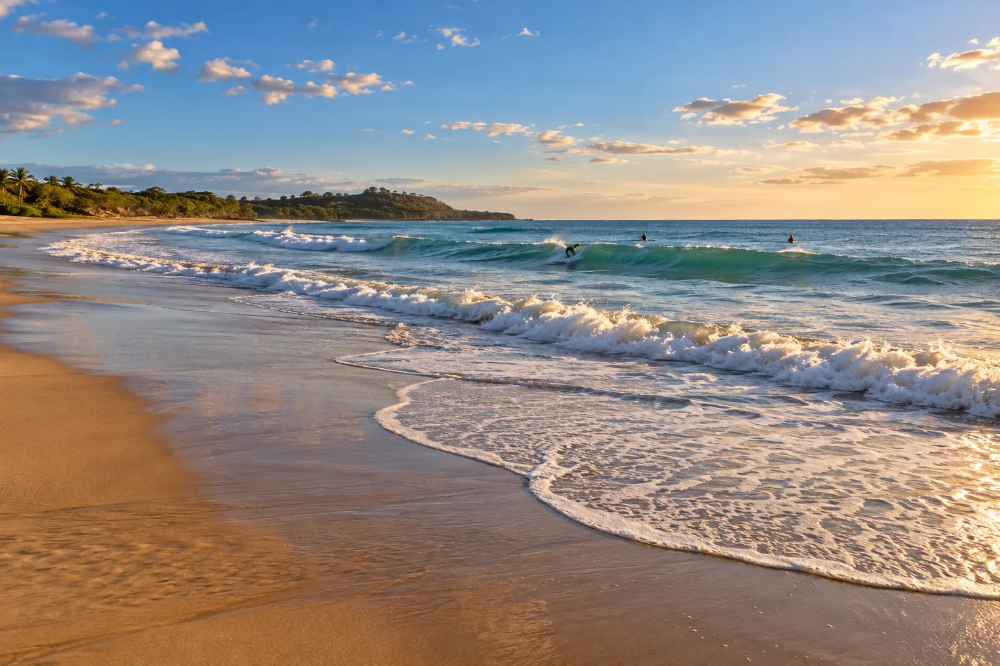

Tamarindo
Costa Rica · surf, bodyboard, baignade, paddle

Une baie large et sableuse, chaude toute l'année, avec des vagues d'école au centre et un estuaire bordé de mangrove à une extrémité.
- Lieu
- Costa Rica
- Niveau
- Débutant
- Activités
- surf, bodyboard, baignade, paddle
- Type d'eau
- Mer / océan
- Coordonnées
- 10.30, -85.84 (position approximative du secteur)
Dangers à connaître
- Fort courant dans l'estuaire, surtout à marée descendante.
- Nombreuses écoles de surf sur le même pic.
- Crocodiles signalés dans l'estuaire : on n'y nage pas.
Le conseil d'Ocean Buddy
Reste sur la plage principale et évite complètement l'embouchure de la rivière.
Ouvrir dans Ocean Buddy Télécharger sur l'App Store
Source : Description historique Ocean Buddy · vérification externe en attente.